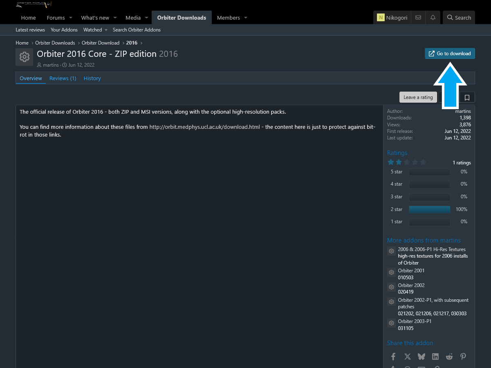
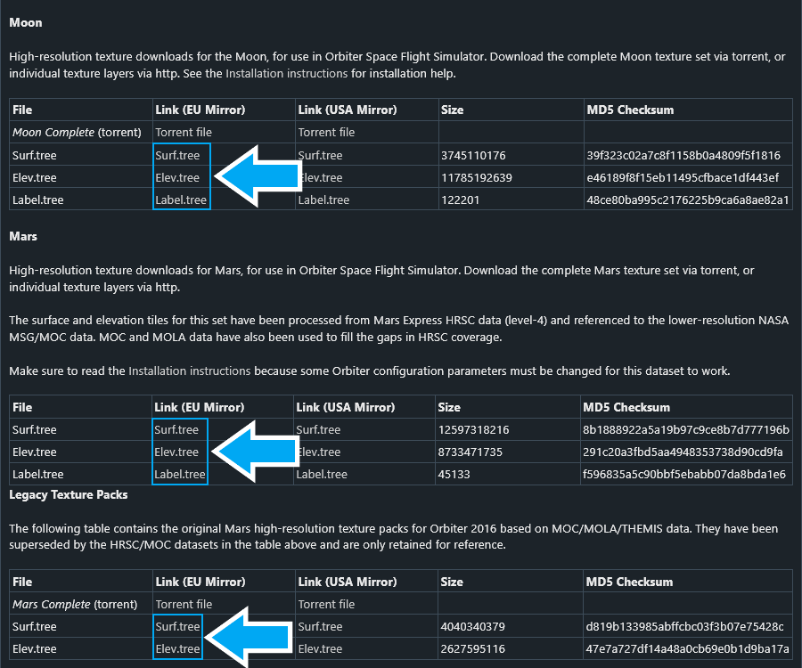
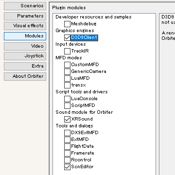

以下のリンクをクリック。
Orbiter core package downloadが、本体のダウンロード。
4つのミラーサイトから、どれか1つを選んでクリック。

ZIP installerの、http downloadをクリック。

ダウンロードしたzipファイルを、適当なフォルダ※に置いて解凍する。
※インストールフォルダ（及び上位フォルダ）の名前に日本語を入れない（半角英数のみ）
音声・グラフィックMODを導入する。
音声再生MODのXRSoundを導入する。
Download Zip Fileのリンクをクリック。
ダウンロードしたファイルを解凍する。
中に入っているファイル・フォルダを、すべてコピーする。
Orbiterのインストールフォルダにペーストして上書きする。
詳しい解説：XRSoundのインストールと設定
描画MODのD3D9Clientを導入する。
Downloadと書かれたボタンをクリック。
ダウンロードしたファイルを解凍する。
中に入っているファイル・フォルダを、すべてコピーする。
Orbiterのインストールフォルダにペーストして上書きする。
詳しい解説：D3D9Clientのインストールと設定
D3D9Clientのために、DirectXのランタイムを導入する。
DirectX End-User Runtimes (June 2010)
ダウンロードしたファイルをダブルクリック。
Yesをクリック。
Browseをクリックして、展開先のフォルダを指定する。※
OKをクリック。
※あらかじめ空きフォルダを作成したほうがよい
指定したフォルダの中にある、DXSETUP.exeをダブルクリック。
指示にしたがってインストールする。
XRSound、D3D9Clientを導入していることを前提に解説する。
Orbiter_ng.exeをダブルクリック。
Modulesをクリック。
以下の3つにチェックを入れる。

Videoをクリック。
右下のAdvancedをクリック。
左下のCreate symbolic linksをクリック。
はいをクリック。
MicroTexturesを導入している場合は、右側のSurface micro texturesをEnabledにしておく。
OKをクリックしてウィンドウを閉じる。
Extraをクリック。
Debugging optionsをクリック。
Performance optionsをクリック。
下のEditをクリック。
Disable font smoothing while Orbiter is runningのチェックを外す。
Enforce font smoothing on exitにチェックを入れる。
OKをクリック。
Orbiterを起動すると、Windowsのフォントが汚くなる（スムージングが解除される）ことがある。
以上の設定で、これを防ぐことができる。
Scenariosをクリック。
フォルダのアイコンをダブルクリック。
赤い三角のアイコン（シナリオファイル）をダブルクリック。
# Welcome to Orbiter 2016では、あらかじめ設定されたシナリオが自動再生される。
自分で宇宙船を操作する場合は、別のシナリオファイルを選択する。
マウスカーソルを画面上部に持っていくと、メニューが表示される。
saveをクリック。
Quicksaveフォルダにセーブデータが作成される。
ゲームを終了したら、Scenariosをクリック。
Quicksaveフォルダを開くと、セーブしたシナリオを選択できる。
Ctrlキーを押しながらQを押す。
もしくは、上のメニューでexitをクリック。
ゲームを終了すると、(Current state)に自動でセーブされる。
このファイルからゲームを再開することもできる。
Save Currentをクリックすると、この自動セーブに名前をつけて保存できる。
テクスチャを追加すると、地表のクレーターなどを再現できる。
リンク先のページを下にスクロールする。
MicroTexture Packまで移動する。

ダウンロードしたファイルを解凍する。
中にある2つのフォルダをコピーする。
Orbiterのインストールフォルダにペーストして上書き。
D3D9Clientの設定画面を開く。
Surface micro texturesをEnabledにする。
高解像度テクスチャを導入しなくてもゲームは動作する。
地球だけ、もしくは月・火星だけ高解像度化することもできる。
100GB程度のHDD・SSD空き容量を確保しておくこと。
ダウンロードページに戻る。
Optional high-resolution texture downloadに移動する。
4つのミラーサイトから1つ選んでクリック。

httpと書かれたリンクをクリック。
拡張子.treeのファイルをすべてダウンロードする。

地球の場合を例に、インストール方法を説明する。
ダウンロードした.treeファイルを、Archiveフォルダにコピーして上書き。
月の場合はMoonフォルダ、火星の場合はMarsフォルダで、上の手順を繰り返す。
Minor bodies（その他天体）の場合は、ダウンロードしたファイルを解凍する。
中に入っているTexturesフォルダをコピーして、Orbiter2016のフォルダに貼り付け。
既存のTexturesフォルダを上書きする。
火星・水星・タイタンに高解像度テクスチャを導入する場合、cfgファイルの差し替えが必要になる。
3つのcfgファイルをまとめたものを用意している。
以下のリンクからダウンロード。
ダウンロードしたファイルを解凍して、Configフォルダをコピーして上書き。